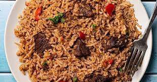

Making pilau dish

Description
Pilau is a traditional, beautiful fragrant rice dish made with many aromatic spices that adds an amazing depth of flavor to the rice.
It can be made with either beef or chicken
Ingredients
- 1 Tsp Cloves
- 2 tbsp Cumin seeds
- 1 Stick cinnamon
- 1/2 Tbsp black peppercorn seeds
- 12 pods Cardamon
- 4 cups water
- Salt to taste
- 1 lb beef sirloin cubed
- 2 beef stock cubes
- 1 tablespoon pilau masala
- 2 tablespoons ginger
- ¼ cup vegetable oil
- 2 cups basmati rice
steps to making the pilau
- Place the cumin, coriander, black peppers, cinnamon, cardamom and cloves in a dry pan.
Roast over low heat until warmed through and fragrant and blend (I used a coffee grinder) until smooth.
- You need just 1 to 11/2 tablespoons for this recipe (depending on how fragrant you want the rice to be). Feel
free to store the leftover spice powder in an airtight container for up to 3 months, or refrigerate for up to 6 months.
- Heat a stockpot on medium-high heat. Add oil and heat until hot but not smoking.
Add the sliced onions and fry for 10-15 minutes or till the onions starts to turn golden brown (be careful not to burn it).
- Add the garlic, ginger, serrano pepper, Cook for 1-2 minutes, until fragrant
- Add the cubed beef, pilau masala, beef stock cubes, bay leaves, cilantro, and salt to taste. Cook until the meat browns and caramelizes stirring occasionally about 8 to 10 minutes
- Add the diced tomatoes and cook for 4-5 minutes, until the tomatoes have released their liquid
- Stir in the potatoes and the water. Bring to a boil and cook for 10 minutes.
- Stir in the rice, and cover tightly with a foil paper (to keep the steam in) if necessary. Reduce the heat to low and cook for 20 minutes, until the rice is cooked and the liquid is absorbed
- Once the rice is dry, remove the foil paper and fluff with a fork to ensure the seasonings are well distributed all around the rice
- Serve hot with fresh Kachumbari